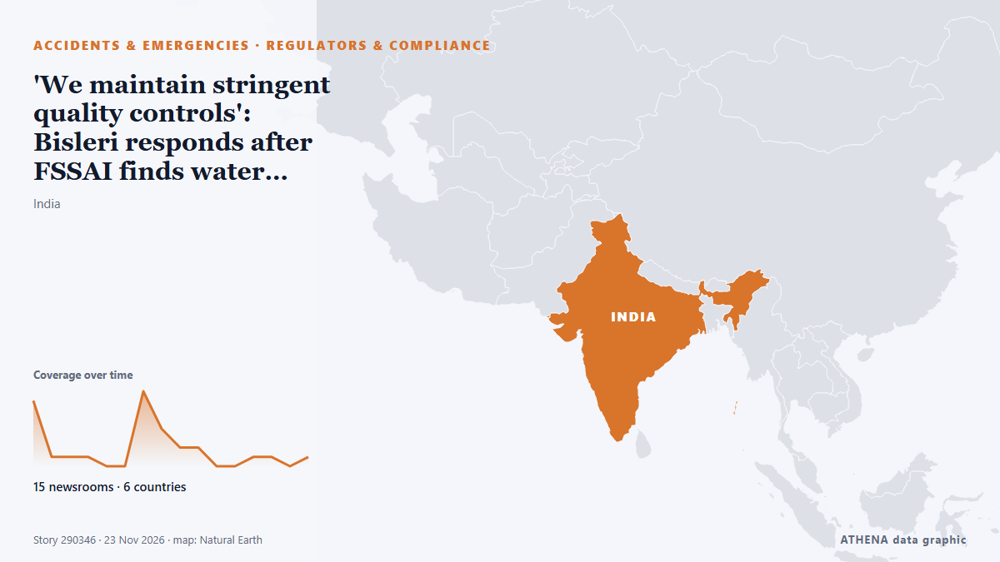

'We maintain stringent quality controls': Bisleri responds after FSSAI finds water unsafe

Popular packaged drinking water brand, Bisleri, came under the FSSAI scanner over the bromate levels. από Deccan Herald
Τι άλλαξε 19 νέες αναφορές από 13 μέσα τις τελευταίες 24 ώρες.
Δείτε τις πηγές ›Τεκμήριωση: Επαρκής
Αναφέρθηκε ανεξάρτητα από 15 μέσα σε 6 χώρες από τις 22 Νοε, πρώτο το Times of India· η κάλυψη εξασθενεί. Το ATHENA εκτιμά τον κίνδυνο μέτριο (2.1/10), κυρίως λόγω της σοβαρότητάς του και της εμβέλειάς του. Βεβαιότητα 82% (υψηλή): το επιβεβαιώνουν 15 ανεξάρτητα μέσα, μέση αξιοπιστία 71%. Μέσα ανά χώρα: Ινδία (22), Ηνωμένα Αραβικά Εμιράτα (2), Μπανγκλαντές (2). Κάλυψη: 22 Νοε έως 23 Νοε, 31 ώρες.
Τι άλλαξε: 19 νέες αναφορές από 13 μέσα στο 24ωρο έως 23 Νοε.
Πρώτη διατύπωση: Bisleri water sample fails FSSAI test: What did inspectors find? What action was taken? What we know
ΑυτοματοποιημένοΕπιλέχθηκε, ομαδοποιήθηκε και βαθμολογήθηκε με τη δημοσιευμένη μέθοδο της ATHENA από 15 ανεξάρτητα μέσα. Ο τίτλος είναι του μέσου· οι προτάσεις της ATHENA ακολουθούν σταθερά πρότυπα - δεν τις γράφει παραγωγική ΤΝ. Πώς λειτουργεί →
Πώς να διαβάσετε αυτή τη σελίδα
- Τι διαβάζετε
- 15 μέσα σε 6 χώρες ανέφεραν αυτό το γεγονός. Οι αναφορές παρακάτω εμφανίζονται με τη σειρά που δημοσιεύτηκαν· κάθε τίτλος ανοίγει το αρχικό άρθρο. Το ATHENA δεν γράφει δικά του ρεπορτάζ.
- Η εκτίμησή μας
- Για την καταγραφή — Οι αναφορές περιγράφουν ένα ολοκληρωμένο, εσωτερικό, εμπορικό ή προσωπικό ζήτημα. Το καταγράφουμε ώστε να βλέπετε ποιος το ανέφερε και πότε. Δεν παρακολουθούμε εδώ κίνδυνο ευρύτερης σύγκρουσης.
- Πόσα στοιχεία υπάρχουν
- Επαρκής Αρκετά ανεξάρτητα μέσα συμφωνούν, αλλά η εικόνα μπορεί ακόμη να αλλάξει.
Αφού αφαιρεθούν οι επαναλήψεις, τα άσχετα και τα παλιά στοιχεία, υπολογίζονται 15 από τις 29 αναφορές που παρατίθενται· το 100% των τίτλων αντιστοιχεί στο γεγονός.
- Τι δεν σημαίνει
- Το ATHENA μετρά πώς καλύπτεται ένα γεγονός, όχι αν είναι αληθές. Δεν είναι πρόβλεψη, κρίση για το ποιος έχει δίκιο ή συμβουλή.
- Τι θα την άλλαζε
- Αναφορές από άλλα ανεξάρτητα μέσα που δείχνουν διαφορετική εξέλιξη, ή σαφής επιβεβαίωση ή διάψευση από επίσημη πηγή.
Εκτίμηση R2 · ανανεώνεται με κάθε ενημέρωση της σελίδας. Το ATHENA δεν έχει δημοσιεύσει ακόμη ιστορικό επιδόσεων για αυτές τις εκτιμήσεις· όταν το κάνει, θα συνδέεται εδώ.
Με μια ματιά
Επιλέγεται, βαθμολογείται και γράφεται από τη δημοσιευμένη μεθοδολογία του ATHENA. Κανένας συντάκτης δεν παρεμβαίνει σε μεμονωμένα γεγονότα. Πώς παράγεται ›
| 22 Nov 15:08 UTC | 7 |
|---|---|
| 22 Nov 17:08 UTC | 1 |
| 22 Nov 19:08 UTC | 1 |
| 22 Nov 21:08 UTC | 1 |
| 22 Nov 23:08 UTC | 0 |
| 23 Nov 01:08 UTC | 0 |
| 23 Nov 03:08 UTC | 8 |
| 23 Nov 05:08 UTC | 4 |
| 23 Nov 07:08 UTC | 2 |
| 23 Nov 09:08 UTC | 2 |
| 23 Nov 11:08 UTC | 0 |
| 23 Nov 13:08 UTC | 0 |
| 23 Nov 15:08 UTC | 1 |
| 23 Nov 17:08 UTC | 1 |
| 23 Nov 19:08 UTC | 0 |
| 23 Nov 21:08 UTC | 1 |
| 22 Nov 18:53 UTC | 0.0 |
|---|---|
| 22 Nov 18:59 UTC | 2.3 |
| 22 Nov 19:29 UTC | 1.3 |
| 22 Nov 20:48 UTC | 3.6 |
| 23 Nov 10:05 UTC | 2.1 |
| 23 Nov 22:32 UTC | 2.1 |
Γιατί αυτοί οι αριθμοί
Σημασία
Πόσο πολύ και πόσο εμφανώς αναφέρεται η είδηση.
Κίνδυνος
Τι περιγράφουν οι αναφορές, βαθμολογημένο για πιθανή ζημιά. Δεν είναι πρόβλεψη.
Βεβαιότητα
Πόσο καλά την στηρίζουν οι ανεξάρτητες πηγές.
Η κάλυψη — ποιος το ανέφερε και πότε
ο τίτλος όπως δημοσιεύτηκε · ανοίγει το πρωτότυπο- Times of India · ΙνδίαFSSAI sanctions prosecution against Bisleri over unsafe packaged drinking water
- Deccan Herald · ΙνδίαFSSAI sanctions prosecution against Bisleri International for 'unsafe' packaged drinking water
- Hindustan Times · ΙνδίαFSSAI sanctions prosecution against Bisleri International, flags ‘unsafe packaged drinking water’
- Indian Express · ΙνδίαBisleri water fails safety test, FSSAI sanctions prosecution
- NDTV · ΙνδίαBisleri Under Scanner After Carcinogenic Substances Found In Water Sample
- Livemint · ΙνδίαBisleri water sample fails FSSAI test: What did inspectors find? What action was taken? What we know
- The Hindu · ΙνδίαFSSAI sanctions prosecution against Bisleri, likely to test other packaged drinking water brands
- Business Standard · ΙνδίαFood regulator allows prosecution against Bisleri for 'unsafe' water
- Gulf News · Ηνωμένα Αραβικά ΕμιράταBisleri water sample fails safety tests: India's FSSAI moves to prosecute
- Times of India · ΙνδίαBisleri under FSSAI scanner: 2 water samples found unsafe, prosecution sanctioned
- Oman Observer · ΟμάνIndia finds sample of popular Bisleri water unsafe
- Indian Express · ΙνδίαThe Bisleri scare: What excess chemicals found by FSSAI do to your body
- Times of India · ΙνδίαBisleri water samples declared 'unsafe' by food regulator; company responds
- The Business Standard (Bangladesh) (working feed) · ΜπανγκλαντέςIndia's food regulator finds sample of Bisleri water to be unsafe
- Deccan Herald · Ινδία'We maintain stringent quality controls': Bisleri responds after FSSAI finds water unsafe
- Hindustan Times · ΙνδίαIndia finds sample of popular Bisleri water unsafe, to expand checks to all brands
- Hindustan Times · ΙνδίαBisleri says packaged drinking water ‘safe’ after FSSAI orders prosecution over ‘unsafe’ samples
- Times of India · ΙνδίαGovt to test packaged water brands across India amid Bisleri 'unsafe' samples row
- The Hindu · ΙνδίαBisleri says it’s water ‘safe for consumption’ after FSSAI sanctions prosecution, says it has received no notice
- Indian Express · ΙνδίαBisleri water unsafe? What the company just said about FSSAI concerns
- CNA (Channel NewsAsia) · ΣιγκαπούρηIndia to test all bottled water brands after Bisleri sample found unsafe
- The Daily Star — page reader · ΜπανγκλαντέςBisleri water's sample found to be unsafe
- Arab Times · ΚουβέιτBisleri water declared ‘unsafe’ in India, company rejects regulator's findings
- Scroll.in · ΙνδίαFood regulator declares Bisleri water samples ‘unsafe’, firm refutes findings
- Indian Express · ΙνδίαBisleri water case: The chemicals, conflicting safety tests and Reliance angle
- Gulf News · Ηνωμένα Αραβικά ΕμιράταTravelling to India? Is Bisleri bottled water safe? What tests reveal and what you should know
- Deccan Herald · ΙνδίαExcess chemicals found in Bisleri sample are ‘potential carcinogens’
- Business Standard · ΙνδίαAmid FSSAI investigation, Bisleri says its water is safe for consumption
- Times of India · ΙνδίαBisleri controversy puts industry in hot water